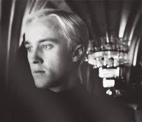

Wizarding World
Harry Potter has been a very essential part of our adolescence. J.K Rowling, author and the creator of the wizarding world gave us all an underdog story of a 'Boy Who Lived'. It is only natural for such a phenomenal work to invoke strong opinions of its ardent readers and one such opinion being antagonisation of Draco Malfoy wasn't truly fair.
This opinion is further backed by the similarites drawn between the main protagonist Harry Potter himself and Draco Malfoy. Many believe despite the similar circumstances both the characters were thrown into, the author has been very harsh on her treatment of Draco's character. The debate though is still ongoing on various platforms over the claims of fandom
Here are some comparisons to ponder upon
- In the beginning, Potter's oppion of wizarding world came from Ron and Hagrid while Malfoy's came from his parents
- They were both sheltered one by the Order and the other by his parents
- They both did what they thought would be best for their family
- They both were teenage boys carrying the weight of the world on their shoulder because of the decisions taken by their elders
- They both had to grow up sooner than their peers